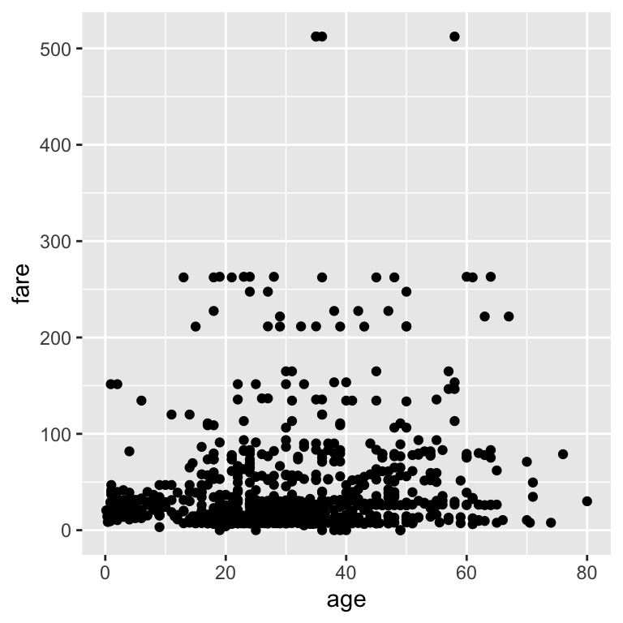

This is a demo of how to use flair with Python (and reticulate) in an R Markdown document.
Just like R, you can use Python in .Rmd files! All you need to do is specify {python} instead of {r} in when you set up your R Markdown code chunk. In the first code chunk below we import the pandas Python package.
import pandas as pdTo add “flair” to our Python code above we create another code chunk, this time using a R engine. In that, we used flair::decorate("code_chunk_name") to reference the Python code chunk (here "packages"), just as you would if you were using an R engine. We also used flair::flair("code_to_decorate") to color the code we wished to color (here "import"):
Normally we would set the above R code chunk option to echo = FALSE so that this code is not printed out, we however opted to intentionally print it out here for the purposes of illustrating how the flair package works.
Let’s use pd.read_csv to load the titanic data and view the top of the data set:
titanic = pd.read_csv("data/titanic.csv")
titanic.head()
#> pclass survived ... body home.dest
#> 0 1 1 ... NaN St Louis, MO
#> 1 1 1 ... NaN Montreal, PQ / Chesterville, ON
#> 2 1 0 ... NaN Montreal, PQ / Chesterville, ON
#> 3 1 0 ... 135.0 Montreal, PQ / Chesterville, ON
#> 4 1 0 ... NaN Montreal, PQ / Chesterville, ON
#>
#> [5 rows x 14 columns]Here we used flair to add pink “flair” to highlight the function we are using to load the data in the Python engine code chunk named "load_data":
To create a scatter plot, we can pass the Python data frame into ggplot using py$data_frame syntax inside a code chunk that this time uses an R engine to make a scatter plot (what can I say, I love ggolot2…):
ggplot2::ggplot(py$titanic, aes(x = age, y = fare)) +
geom_point()
Here we used flair to add pink “flair” to highlight the function call to ggplot, as well as blue font to highlight the key part of the syntax that allows us to pass the Python data frame to R:
The last thing we do is find the destination of the first passenger:
first_dest = titanic["home.dest"][0]The destination of the first passenger is St Louis, MO.
Here we used flair to add yellow “flair” to highlight how we numerically index the pandas data frame to get the first passenger’s destination (fun fact - Python starts counting from 0). We then used inline code to print out the destination within the formatted markdown text in the sentence above: